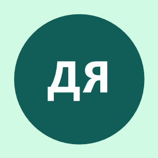

Про автора
Мене звати Денис Яремчук. Я навчаюся на третьому курсі за спеціальністю «Комп’ютерні науки».
На курсі вебтехнологій я працюю над TaskBoard і вчуся поєднувати розмітку, стилі та логіку в одному застосунку.

Мене звати Денис Яремчук. Я навчаюся на третьому курсі за спеціальністю «Комп’ютерні науки».
На курсі вебтехнологій я працюю над TaskBoard і вчуся поєднувати розмітку, стилі та логіку в одному застосунку.
| Етап | Що вивчаю | Статус |
|---|---|---|
| 1 | Git і Markdown | Пройдено |
| 2 | HTML і CSS | Пройдено |
| 3 | JavaScript і DOM | У процесі |
| 4 | Flask і бази даних | Заплановано |